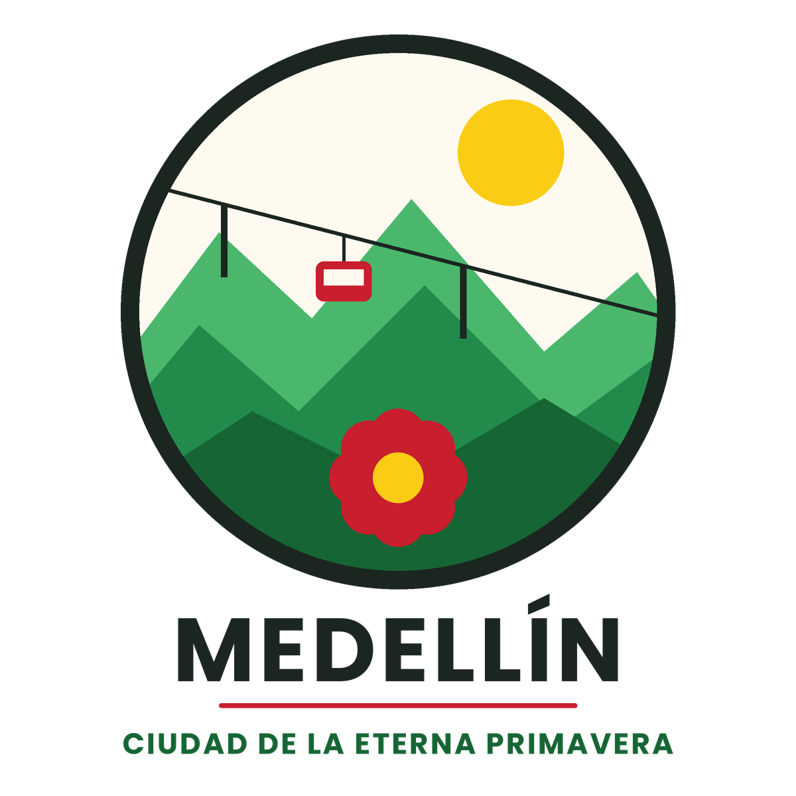
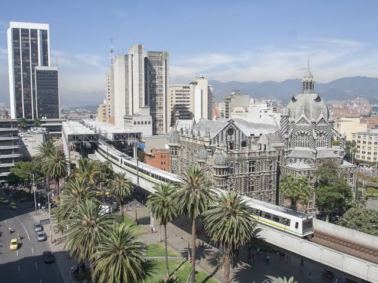
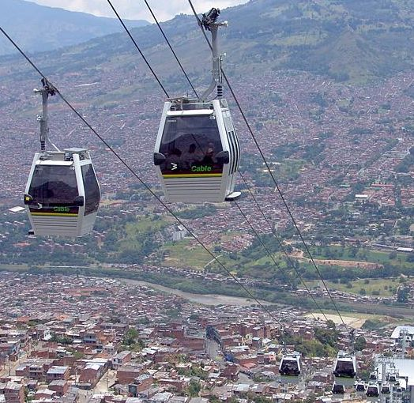

.jpg)
Piedra del peñol
La Piedra del Peñol es un monumento natural ubicado en Medellin. Es uno de los puntos de interés más emblemáticos de la ciudad.

Bienvenidos a la pagina de mi region, aqui podras encontrar informacion sobre Medellin Antioquia
Medellin es la capital del departamento de Antioquia, ubicada en el noroeste de Colombia. Es conocida por su clima agradable, su gente amable y su desarrollo urbano.

Medellin tiene una rica historia que se remonta a la época precolombina. Fue fundada en 1616 y ha experimentado un crecimiento significativo a lo largo de los años, convirtiéndose en un importante centro cultural y económico.
La Piedra del Peñol es un monumento natural ubicado en Medellin. Es uno de los puntos de interés más emblemáticos de la ciudad.

El Metrocable es un sistema de transporte público que conecta diferentes zonas de Medellin. Es una forma eficiente de desplazarse por la ciudad.

La Comuna 13 es una zona de Medellin conocida por su desarrollo urbano y su vibrante vida cultural.
La cultura de Medellin es vibrante y diversa. La ciudad es famosa por su música, especialmente el género de la salsa y el reguetón. Además, cuenta con festivales culturales como la Feria de las Flores y el Festival Internacional de Poesía.

La Feria de las Flores es un evento anual que celebra la cultura y la tradición de Medellin. Incluye desfiles, conciertos y exposiciones florales.

La Bandeja Paisa es un plato típico de la región de Antioquia. Está compuesto por arroz, frijoles, carne, chicharrón, huevo, plátano y aguacate.